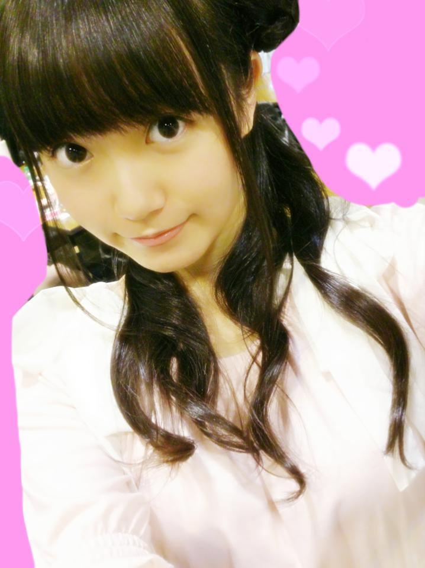
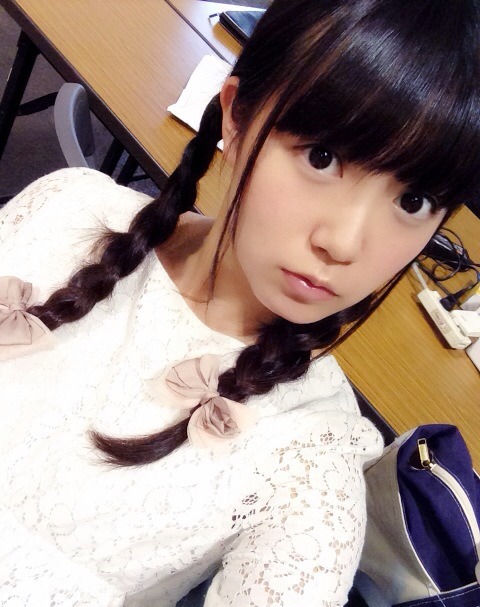
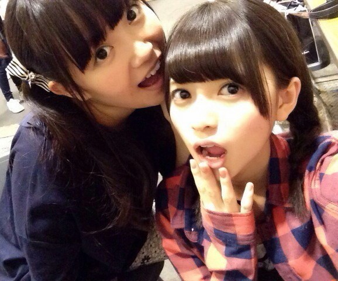

| 2014/09 21 Sun | ひめたん-OoO-その481 |
名古屋 全国握手会＆個別握手会！
久々の名古屋満喫した～
遊びに来てくださったみなさん
ありがとうございました＼(^o^)／
お留守番ちーむのみなさん
レポするよー！
□全国握手会□
みなみとペアでした！

みなみんびーむかわいかった♡♡
みなみファンのみなさん
仲良くしてくださって
ありがとうございました(<・ω・>)
みなさん最近いろんな子に
びーむしてもらってるらしいじゃん～
いろんなメンバーから
今日びーむしたよ！って報告来るよ～
みんなやっとびーむの楽しさに気づいたね♡
斯く言う私も
ぱんちとか ずっきゅんとか
ぺろぺろとかしたな～(笑)
あ、あとトークショーに参加して
ちゃっかりMCしたの(っ´ω`c)
「逆生誕祭」ってゆコーナーもして
ファンのみなさんのお誕生日を
お祝いしたんだよ\❁/
サイン入りボード大切にしてねっ
□個別握手会□
1部＊お花くるくる

乃木どこ留守告回の私服♡
2部＊三つ編み
3部＊安定のくるくるついんてーる

総レースの白ワンピ
あのね、あのね、あのね、
NOGIBINGO!2のDVD-BOXが
発売されたばっかなんだよね！
その話題が多かったな～＊
ひめたんの手元にも届いたけど
まだ観てないから早く開けなきゃねー
ツアー行ったよーとか
乃木のの、のぎ天、めーるの感想とか
あとラブライブとか弱虫ペダル！
ラブライブは近々あすかりんと
グッズ買いにいくの♪
ほかにも楽しいお話たくさんー(＊´ω`＊)
はじめましてのひとも
一週間ぶりのひとも
お久しぶり～のひともいたね！
りぼん率ぴんく率名札率が
相変わらず高くて
ほんとにきゅんきゅん王国民さん優秀♡
他の子推しだけど
会いに来てみましたーってひとも
本当に嬉しかったよ～
推しの子には内緒にするから
安心してね\( ˆoˆ )/きゃ
名古屋でする次の握手会は12月だから
またちょっと先なんだね（；；）
時間かかっちゃうけど
また必ず行くからね♡
そのときは会いに来てくれるかな？
次回は来週 幕張メッセ
参加するよ～ってひとは
よろしくお願いします！
あすかりんもぐもぐ

乃木ののは聴いてくれたかな？
まず今回の振り返り！
#77は高山一実ちゃん、堀未央奈ちゃん
番組史上初の出来事っていうのは
オテンキのりさんが
収録に参加してくださったんです(〃ω〃)
のりさんありがとうございました♪
みんなもお誕生日同じ有名人さんを
よかったら探してみてねっ
それからもうひとつ
10thカップリング曲「私、起きる。」
1コーラスだけ流しました♪
フルコーラス解禁まで
まだ詳しいことは言えないけど
一応オンエアの中でさらっと
正規メンバーの
女子高生10人ユニット！
ということはお話しました～＊
そしてMCはなんと今回が最後でした
思えば初MC回を収録したのが
プリンシパル始まったばかりの頃。
私は元々ラジオを聴くのが習慣のひとつで
乃木ののMCいつかやりたいな～って
とっても張り切ってたのに
いざやってみると
台本通りにまわすのが精一杯で
段取りを追ってたら
トークが広がらなかったりして
よく悩んでたな～
プリンシパル期間ってのが
また何とも言えなかったな～(笑)
でも最近はやっと肩の力が抜けて
いつも収録が楽しみだった！
なんでもアリ！楽しければおっけー！な
乃木ののさんのスタンスには
とっても救われました(＊´ω`＊)
拙いMCでしたが
たくさんのひとに聴いていただけて
気づけば幸せな3ヶ月半になりました。
リスナーのみなさん
乃木ののスタッフのみなさん
本当にありがとうございました！
交代は寂しいけれど
いろんなひとがいろんな立場になるのも
乃木ののの魅力のひとつだと思います
これからも引き続き
毎週聴いてくださいね♡
私もゲストで登場することが
あると思うので
その時はよろしくお願いします(っ´ω`c)

 修学旅行で九州に行くんだけど
修学旅行で九州に行くんだけど
お土産はなにがいい？
カステラ？川後さん？衛藤さん？僕？
カステラがいいな～
今3人を敵にまわした気がするな～
弱ペダ楽しみだね
ひめはひめなのひめなのだ〜
ひめ～らぶひめ～ふぁいと～
歌ってる湖鳥ちゃんのCVが
田村ゆかりさんなのがまたすてき♡♡♡
弱虫ペダル！！
ひめたんは誰が好きー？
この質問多かった！
御堂筋くん／(^o^)＼
きもっきもっきもー♡
ひめたんの日記の
コメント欄下２ケタに46を踏んだ方へ
手書きでコメ返するコーナー
＼ ひめたん46 ／

いつもたくさんのコメント
ありがとうございます
前回タイトル間違えてたね(´・ω・｀)
教えてくれたひとありがとう
何気にひめたんの日記では
新制服 初解禁☆
ほんとはブレザーも着るよ～
今日は内容が長くなっちゃったから
のぎ天のことは次回書くね
もう感想書いてくれたひともいた♡
まだ観てないよってひとは
次の日記更新するまでに観てね！
(＊´・ω・＊)
コメント(1273)
2014/09/21 23:42